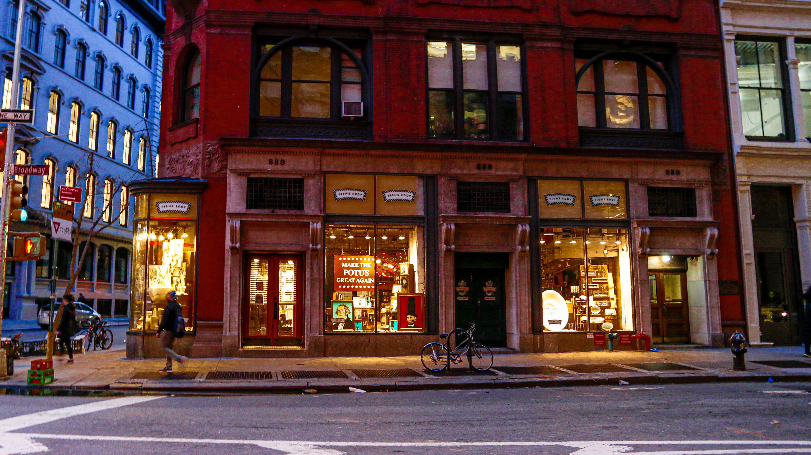
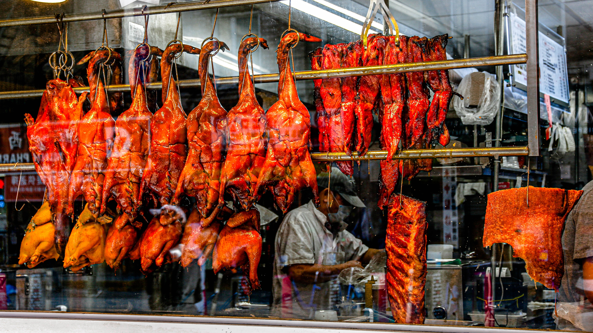
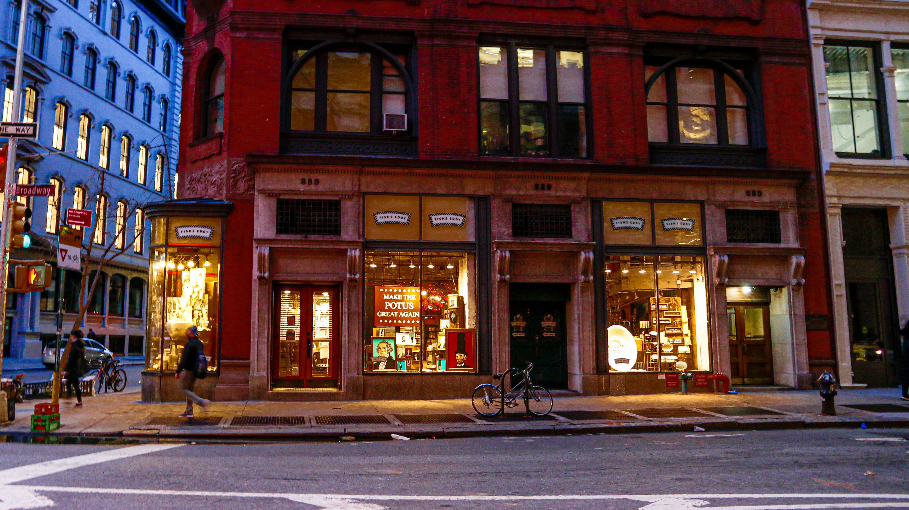
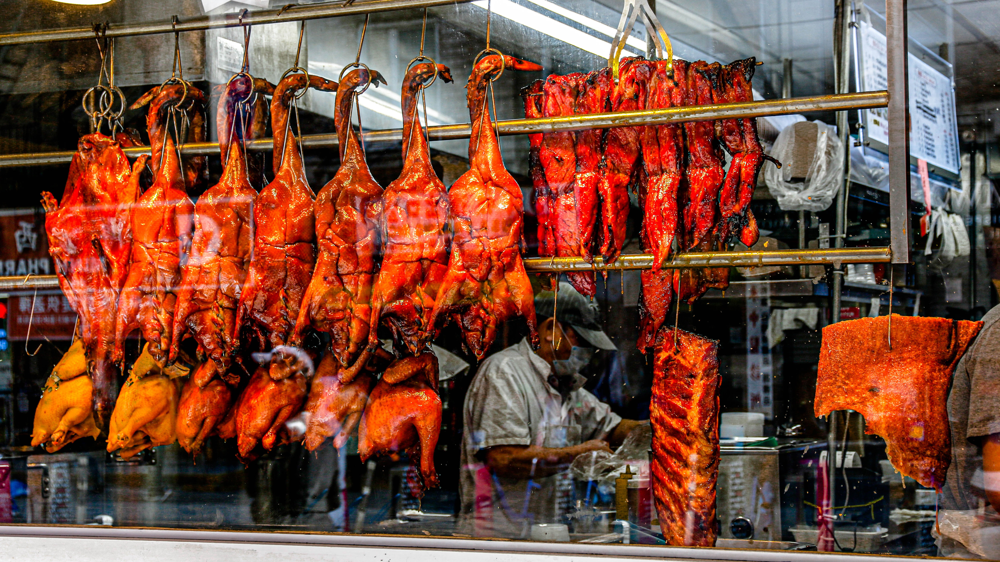

I designed this booklet about Coronavirus to examine how Coronavirus has impacted one of the most famous cities in the world, NYC.
Here are some photos I took of New York City under quarantine.
 



To download the booklet and here is the link
To learn more about me, please visit my homepage 🥺